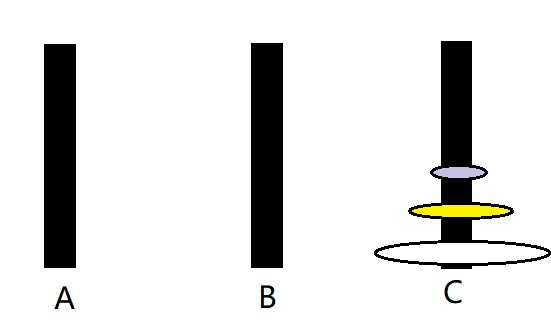

原文连接:https://www.cnblogs.com/Fluoxetine2/p/Fluoxetine3.html
一、什么是递归算法
递归即递推+回归。递归算法是把问题转化为规模缩小了的同类子问题，然后递归调用函数（或过程）来表示问题的解。
二、递归算法的特点
1.必须有 递归函数 + 递归出口
2.递归算法解题通常显得简洁，但效率较低且系统通过栈来储存每一层的返回点、局部变量，递归次数过多容易造成栈溢出。
三、如何编写递归函数
例：Hanoi 塔（问题内容不再赘述）
我们以三个圆盘（从小到大依次成为1，2，3号）三根柱子（A,B,C)为例:
想要将 3号 移至C柱
step1. 借助C把1、2号盘移到B;
step2. 将3号盘移至C;
想要将 2号 移至 C 柱 则用上述同样的思想 (递归函数的内涵所在,将大问题逐个分解为相同小问题）
step1. 借助C 将 1号盘 移至 A柱 /*这里可以直接将 1号盘移至A,但如果 B盘上不止一个盘则需要借助C ,我这里是 按整体规律来写*/
step2. 将 2号盘 移至 C;
最后将 1号盘 移至 C柱

Hanoi塔 解题步骤：
1.将 A 上 n-1 个盘子移到B (借助C)
2.把 A 上 剩下的盘子移到C
3.将 n-1 个盘子从B 移到 C (借助A)
！！！
不用死记A B C在各个盘移动时的站位,将他们想成
初始柱 过渡柱 目标柱 这样在敲代码时思路会清晰一些
代码实践：
#include<iostream> using namespace std; void move(char x1, char x2) { cout << x1 << "-->" << x2 << endl; } //A、B、C三个位置依次对应 初始柱/ 过渡柱/ 目标柱【是对应的位置对应各种柱子（初始、过渡、目标柱） 不是ABC字母对应】 void hanoi(int n, char A, char B, char C) { if (n == 1) move(A, C); else { hanoi(n - 1, A, C, B); //A为初始柱 C为过渡柱 B为目标柱 move(A, C); hanoi(n - 1, B, A, C); //B为初始柱 A为过渡柱 C为目标柱 } } int main() { cout << "输入盘子数： "; int p; cin >> p; char A = 'A', B = 'B', C = 'C'; hanoi(p, A, B, C); return 0; }

----------------------------------------------------小分割线----------------------------------------------
注意递归算法的两个必要条件递归出口和递归函数
认真分析如何将大问题分解为子问题
这些需要多加练习~
==============================大分割线=========================
如有错误还是希望评论指正 ：）